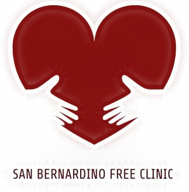
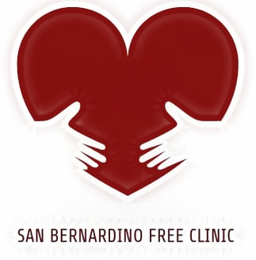

Nghia Huynh
I am a graduating student who will obtain my Bachelor of Science degree in Fall of 2021 in Biology. In this capacity, I have also undertaken significant experiences in both clinical and non-clinical extracurriculars. These experiences in turn included both paid and volunteer positions. Within a clinical setting, I have volunteered at the Riverside Community Hospital as part of the COPE Health Scholars Program for 2 years, accruing significant experience and time with patients and the patient care teams. I also volunteered my time at the San Bernardino Free Clinic, where I assisted medical students and physicians in providing free healthcare to the underserved populations of San Bernardino and surrounding areas. While I understand that my experiences in healthcare would not be directly applicable to a potential career in financial advising, I believe that the human interactions and communication skills I garnered over the course of my involvements in these programs will afford me new and novel opportunities to connect with my future peers and clients, thus allowing me to establish a strong rapport of support and thus be able to work together more effectively.
On top of my experiences assisting others and developing my interpersonal skills in the field of healthcare, I have also devoted significant time and effort to helping others through both behind the scenes work and mentorship in my two paid employment positions withing the UCR College of Natural and Agricultural Sciences. These experiences included providing education and resources for navigating the difficult transition from high school to college, including a document I authored regarding the importance of budgeting and properly managing finances as an incoming college student. Through my efforts, I was able to make a significant impact upon not only my mentees, but also a significant portion of UCR's incoming freshmen population through the official university materials and workshops I prepared and presented. Additionally, as part of my responsibilities in the Fall Quarter, I worked closely with an academic faculty member to facilitate a freshman transition success learning course, assisting with preparing lesson plans and leading instruction of classes. I believe these experiences in education and assisting others will synergize strongly with my ambitions to become a financial advisor.
Finally, while I do not yet have formal training or experience in the world of finance, I have again devoted significant time and effort towards developing my financial literacy since the beginning of 2021. To these ends, I have perused many of the avenues and resources available to retail investors and financial managers, such as educational lectures and releases. This included not only official government releases such as those prepared by the federal government and its agencies including the Securities and Exchanges Commission, but also community authored and peer revised due diligence and analyses of both technicals and fundamentals. Additionally, by perusing several forums and discussion boards, I have been able to discuss and reinforce my ideas and understandings via discussion with other like-minded and highly enthusiastic investors. I believe this developing literacy in conjunction with my passion to communicate with and educate my peers will allow me to thrive and excel in a position as a financial advisor.
Experience
UCR CNAS Student Assistant and Peer Mentor
• Developed iLearn course modules as well as official university materials for release during employment with the UCR CNAS UAAC
• Worked with a caseload of 30 mentees to assist them in the transition from high school to college as a UCR CNAS Peer Mentor
RCH COPE Health Scholar
• Gathered and developed significant interpersonal communication skills and experience as a RCH COPE Health Scholar
UCR AMSA Leadership
• Elected for several leadership positions within AMSA, including Publicity Chair, Historian / Webmaster, and Director of External Relations
Education
UC Riverside
Portfolio




